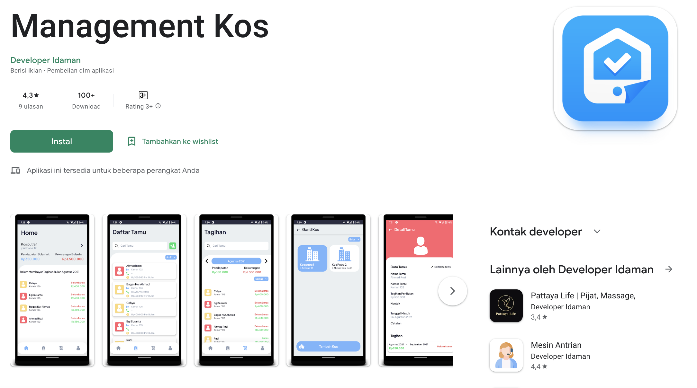
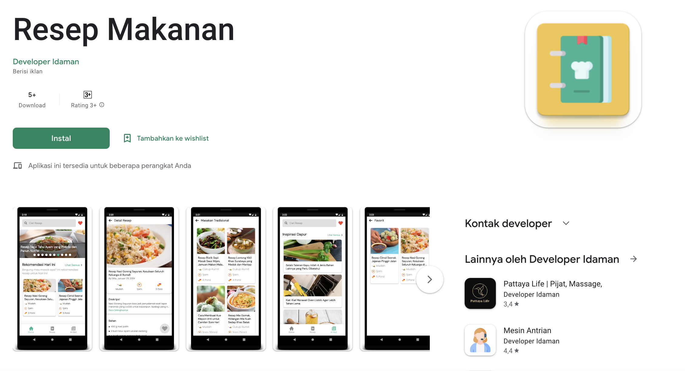
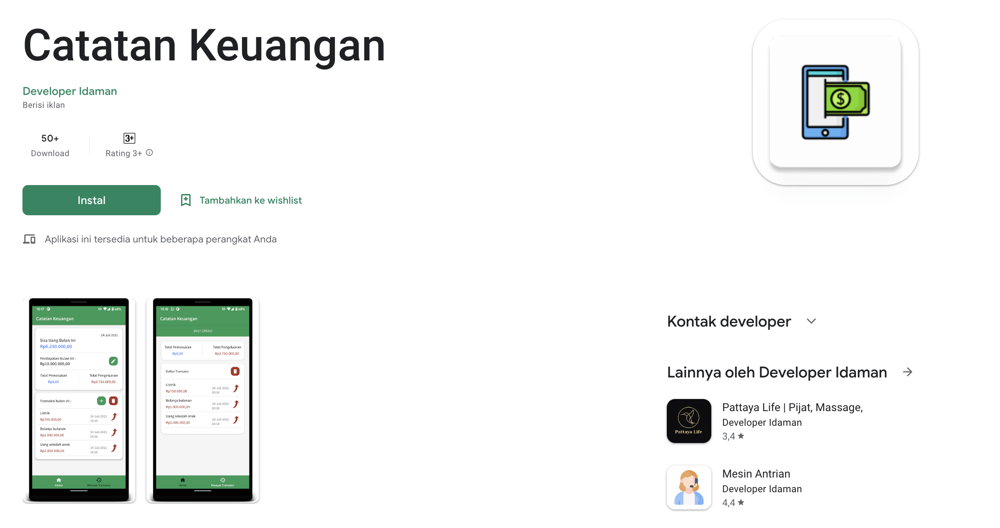
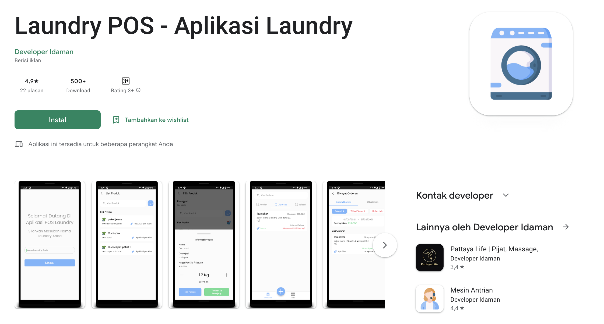

Project
Berikut adalah contoh project yang pernah saya buat
|

Management KosManagement Kos adalah aplikasi yang di buat untuk membantu pemilik kos mengelola tempat kosnya. Anda sebagai pemilik kos dapat mengatur tanggal setoran kos,siapa saja yang berapa di tempat kos anda dan tentunya menghitung pembayaran di tempat kos anda. Selain itu aplikasi ini berjalan secara offline tanpa takut tidak bisa digunakan bila tidak ada internet. |

Resep MakananResep Makanan menyajikan berbagai macam resep dari masakan modern sampai dengan resep masakan tradisional. anda juga dapat memfavoritkan resep makanan tersebut sehingga bila suatu saat nanti ingin mencari resep tersebut tinggal buka menu favorit. Ada akan mengetahui berapa lama masakan bisa di sajikan bahan-bahan makanan yang harus di gunakanan. Khususnya resep masakan Indonesia yang sangat beraneka ragam. |
|

Catatan KeuanganMencatat adalah hal yang sangat di perlukan. menghindari dari lupa. dengan mencatat keuangan anda di aplikasi akan memudahkan ada untuk mengatur keuangan kedepannya. menghindari pengeluaran yang tidak di perlukan. catatan keuangan ini akan membantu ada dalam mencatat transaksi keuangan anda. memberikan hasil setiap bulannya |

Laundry POS - Aplikasi LaundryLaundry POS adalah aplikasi untuk membantu pengelolaan laundry di Indonesia. membantu merekap transaksi, catatan dan pengelolaan pelanggan laundry anda. aplikasi ini bekerja secara offline tanpa kawatir bila suatu saat tidak ada internet. fitur lainnya anda bisa bisa juga mencatat keuangan laundry anda, dari pemasukan dan pengeluaran laundry anda bisa mencatatnya di aplikasi ini. |